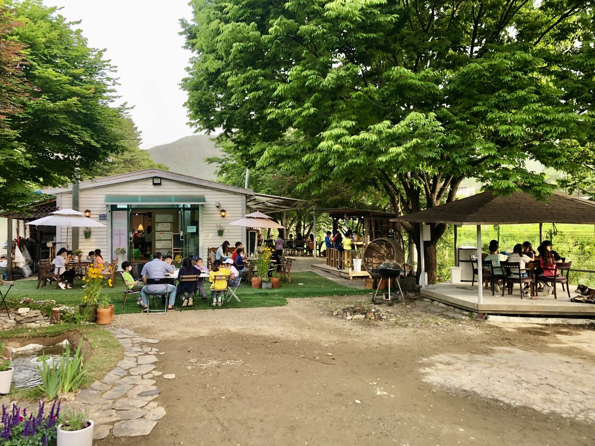
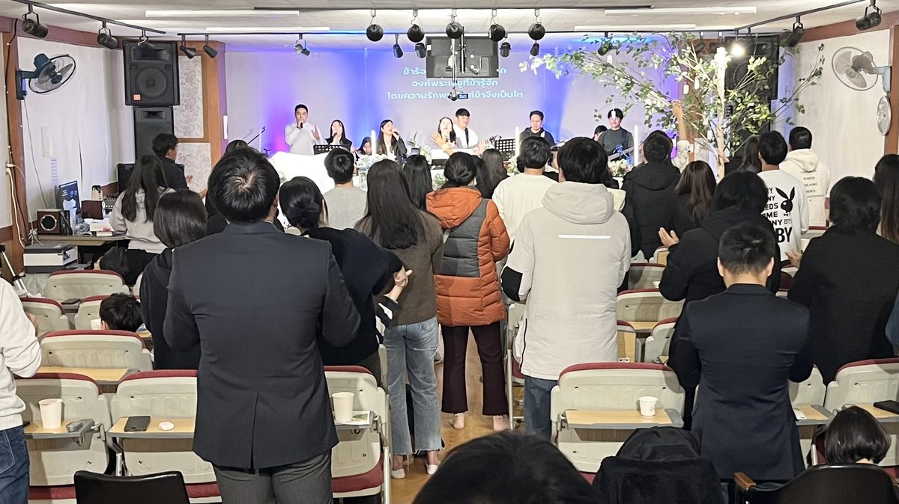
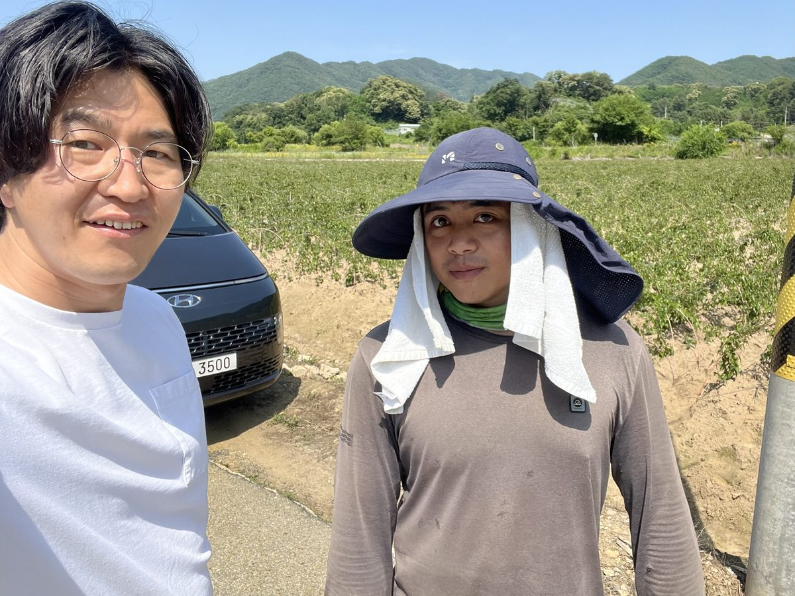
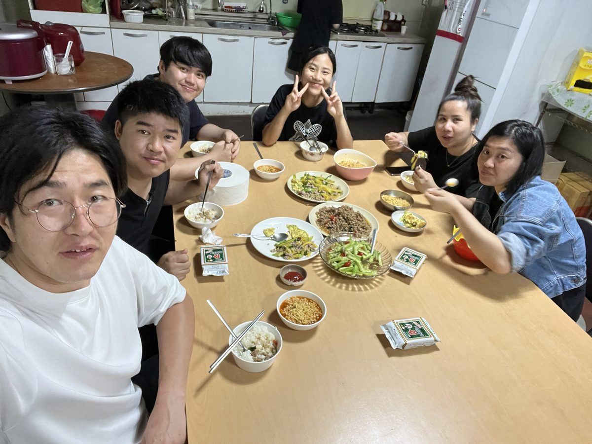

제4회 코라트 지저스 캠프 후기รายงานค่ายเยซูโคราชครั้งที่ 4
제4회 태국 지저스 캠프가 코라트에서 은혜 가운데 마쳤습니다. 63명의 청년들이 함께 모여 말씀과 찬양으로 주님을 만났습니다.ค่ายเยซูเยาวชนไทยครั้งที่ 4 ที่โคราชจบลงด้วยพระคุณ มีเยาวชน 63 คนได้พบพระเจ้าผ่านพระวจนะและการนมัสการ

우리는 함께 예배하고, 함께 성장합니다 เรานมัสการและเติบโตด้วยกัน
고된 타국 생활 속에서 쉼이 필요할 때, 언제든 찾아오세요. 하나님의 사랑 안에서 태국인과 라오스인 모두가 한 가족이 되어 따스한 위로를 나누는 안식처입니다. เมื่อท่านเหน็ดเหนื่อยในแผ่นดินต่างถิ่นและต้องการพักพิง โปรดมาเยือนเราได้ทุกเมื่อ ที่นี่คือที่พักใจซึ่งพี่น้องไทยและลาวเป็นครอบครัวเดียวกันในความรักของพระเจ้า แบ่งปันการปลอบประโลมอันอบอุ่น

단기선교มิชชันสั้น제4회 태국 지저스 캠프가 코라트에서 은혜 가운데 마쳤습니다. 63명의 청년들이 함께 모여 말씀과 찬양으로 주님을 만났습니다.ค่ายเยซูเยาวชนไทยครั้งที่ 4 ที่โคราชจบลงด้วยพระคุณ มีเยาวชน 63 คนได้พบพระเจ้าผ่านพระวจนะและการนมัสการ

현장방문เยี่ยมเยียน교회로 오시기 어려운 이주노동자 형제들이 일하는 일터를 직접 찾아가 안부를 묻고 함께 기도합니다.เราไปเยี่ยมพี่น้องแรงงานต่างถิ่นที่มาคริสตจักรไม่สะดวก ถามทุกข์สุขและอธิษฐานร่วมกันถึงที่ทำงาน

가정방문เยี่ยมบ้าน한 가정 한 가정 찾아가 함께 식탁을 나누며 일상의 기쁨과 무거운 짐을 나눕니다.เราเยี่ยมเยียนทีละครอบครัว ร่วมโต๊ะอาหารและแบ่งปันทั้งความสุขในชีวิตและภาระหนักด้วยกัน
함께 기도해주세요. 익명으로 신청하실 수 있습니다. ขออธิษฐานเผื่อด้วยกัน สามารถส่งแบบไม่เปิดเผยชื่อได้
기도제목 신청 ส่งคำอธิษฐาน한마음태국인교회의 가족이 되어주셔서 감사합니다. 등록해 주시면 따뜻하게 맞이하겠습니다. ขอบคุณที่มาเป็นครอบครัวคริสตจักรไทยร่วมใจ ลงทะเบียนเพื่อรับการต้อนรับอันอบอุ่น
새가족 등록하기 ลงทะเบียนสมาชิกใหม่